デジカメで写真を撮ったらやること。
まず PC に移動させて、次に Googleフォト にアップロードして、最後にPCとSDカードに残ったデータを削除って手順を毎回やっています。
ですが、撮ってすぐPCに移動させればいいのに、面倒くさいから後でまとめてやろうとすると忘れちゃうんですよね。
で、移したと思い込んでSDカードのデータを削除！！！
そんな不幸にも消してしまったデータを復元できないか試してみます。
EaseUS Data Recovery Wizard
https://jp.easeus.com/data-recovery-software/drw-free.html
ダウンロード
上記サイトから復元ソフトの無料版をダウンロードします。
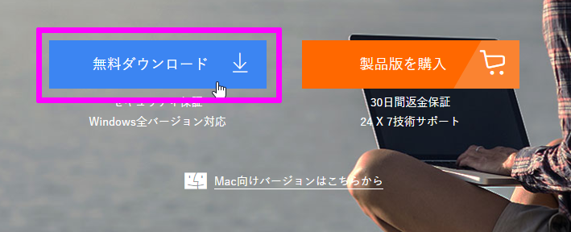
インストール
ダウンロードしたインストーラーを実行します。
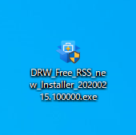
「今すぐインストール」を選択します。
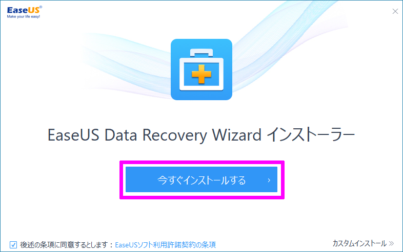
メインファイルがダウンロードされ、
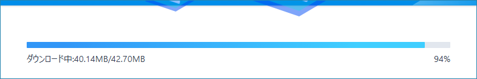
インストールが始まります。
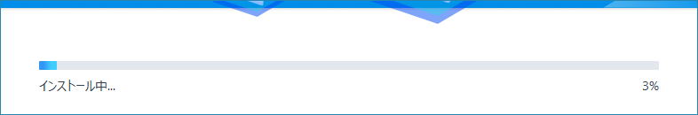
しばらく待つとインストールが完了します。
「今すぐ始める」を押すと EaseUS Data Recovery Wizard が起動します。
使い方
リカバリー
復元したいデータが入っていたSDカードを PCに挿します。
空っぽです。
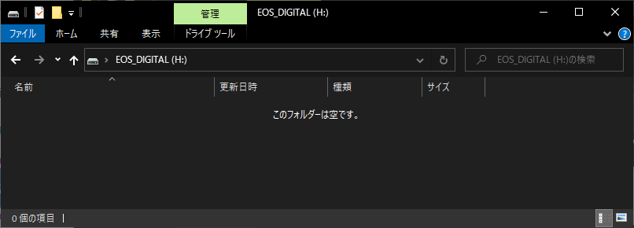
次に、復元ソフトで 対象のSDカードを選択し「スキャン」をクリックします。
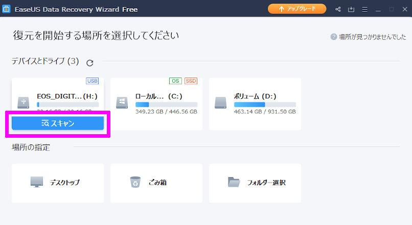
しばらく待つと、復元可能なファイル一覧が表示されます。
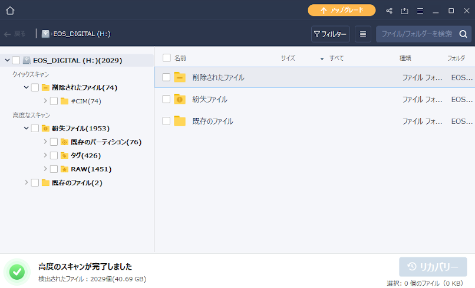
30GB の SDカードなのに、40GB分のファイルが見つかりました。
全部を復元したいのですが、無料版だと 2GB までしか復元できません。
なので、復元したいデータだけを選択します。
選択したら、右下の「リカバリー」ボタンをクリックします。
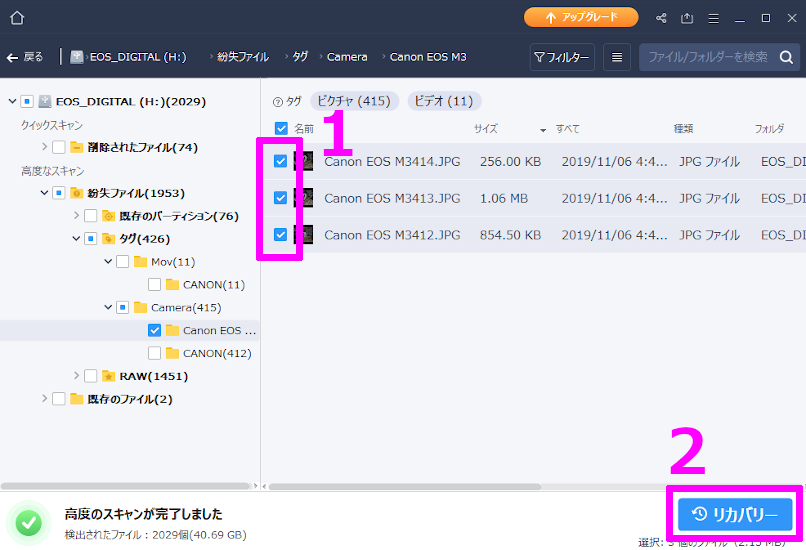
適当なディレクトリにフォルダを作って「OK」を押します。
ただし、復元元のSDカード内は選択しないで下さい。データの復元が出来なくなります。
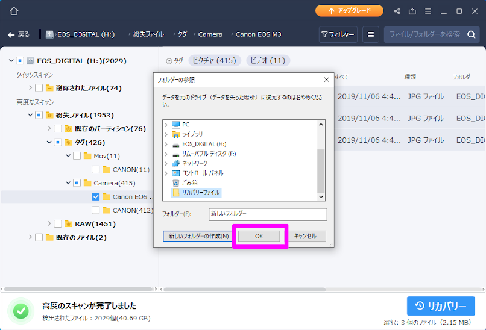
復元するファイル数にもよりますが、数分で復元が完了しました。
3個のファイルを復元しようとしたんですが、2個失敗しました。

とりあえず、復元されたファイルを見てみます。
ファイルは3個あるんですが、1つだけ中途半端に復元されていました。
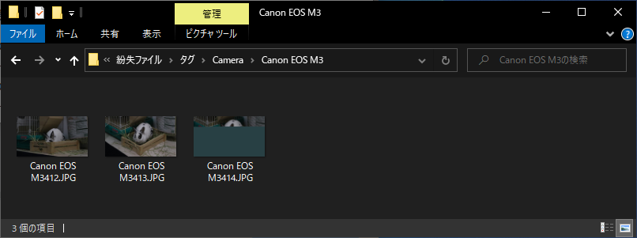
あと、失敗判定だった「M3413.JPG」はちゃんと復元されています。
失敗といいながら成功しているのは、何なんでしょうね？
予想ですが、Excel や Word みたいな ドキュメントファイルだと、開けないのが失敗判定になるんだと思います。
新たにスキャンをする前に、今回のスキャン結果を保存する事が出来ます。
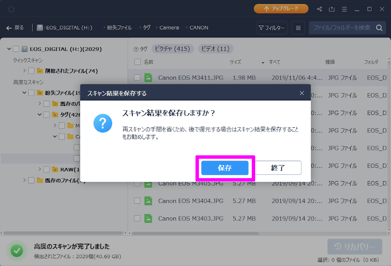
復元失敗の詳細
復元失敗の「詳細」ボタンを押すと、復元失敗したファイルの一覧が表示されます。
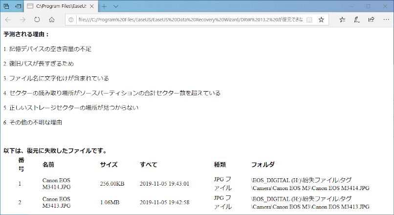
復元失敗の原因は不明です。
表示レイアウトの変更
復元したいファイルを探すのにファイル名だと何か分からないので、表示レイアウトを変更しましょう。
詳細レイアウト
小さいアイコンで中のファイルがプレビューされます。
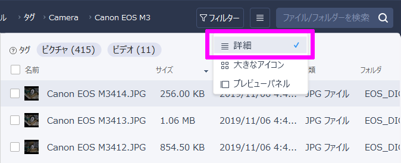
大きなアイコン
プレビューアイコンが大きくなって、中のファイルが一目瞭然ですね。
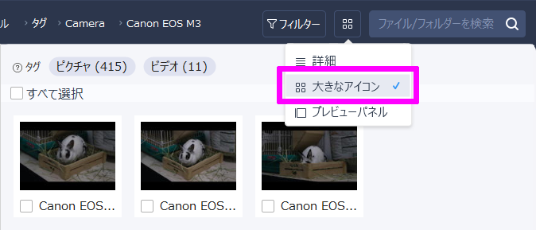
プレビューパネル
右側にプレビューが表示されます。
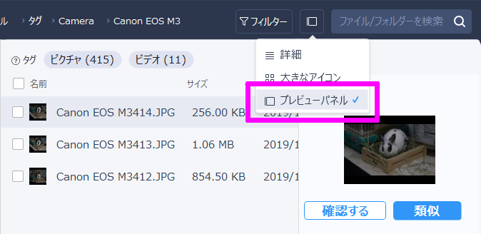
ちなみに、プレビューパネルの「確認する」というボタンを押したら、プレビュー画面が表示されます。

ビデオファイルだと、プレビュー出来ない時もありました。
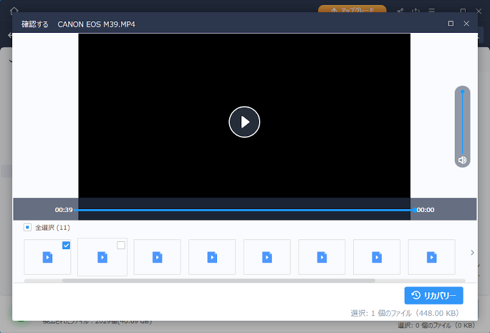
プレビューが出来ないものは、復元が出来ないと思ってよさそうです。
類義選別
プレビューパネルの「類義」ボタンを押すと、類義選別が出来ます。
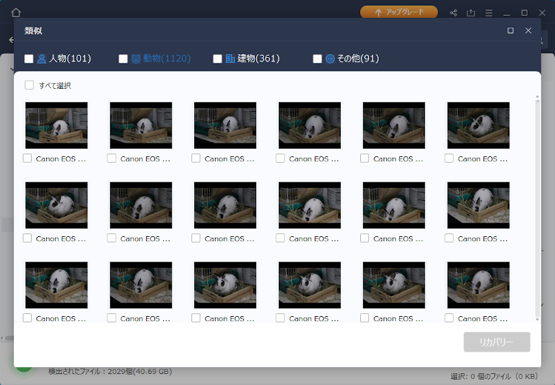
精度はクソです。
何を基準で選別しているか分からないですが、役に立ちませんでした。
画像の選別がダメなだけで、もしかしたら拡張子で Excel や Word を選別するかもしれません。
フィルター
復元させたいファイルが決まっているなら、フィルターをけると探しやすいと思います。
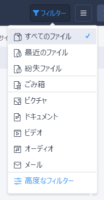
例えば フィルターに「ビデオ」を設定すると、左のカッコ内の数がフィルターにヒットしたファイル数に変わります。
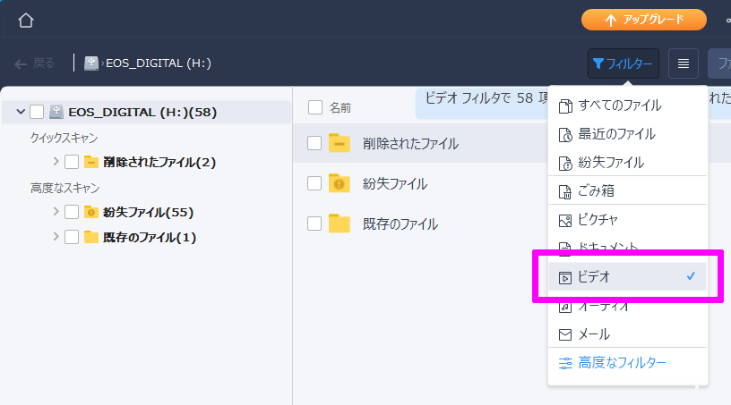
高度なフィルターを使えば、ファイルの種類以外にも ファイルサイズ や ファイルの頭文字 でフィルターをかける事が出来ます。
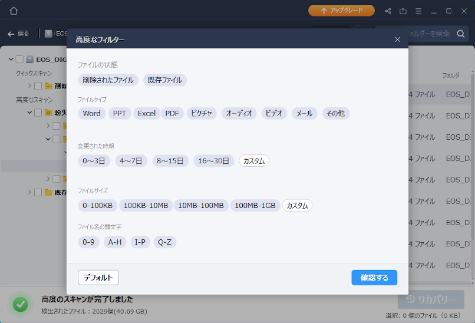
と、思ったんですが、
頭文字でフィルターをかけても、正しく絞り込めませんでした。原因は不明です。
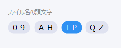
おわりに
今回は、無料版でデータの復元をしました。
無料版の制約で 2GB までしかデータの復元が出来ないので、復元するファイルを選別しました。
有料版にしたら、無制限でデータの復元が出来るようになるので 選別しきれない場合は有料版もいいかもしれません。
ですが、先走って最初から有料版を買う必要は無いと思います。
まず、無料版でどれだけ復元出来るかテストして、復元率に納得した上で、有料版にアップグレードすることをオススメします。
有料版だから、復元率が上がるわけじゃないので、無料版で復元出来ないのは 有料版になっても復元できません。
まあ間違えて消す自分が悪いんで、何とも言えないです。
「EaseUS Data Recovery Wizard」の復元率はそんなに高くない
EaseUS Data Recovery Wizard の復元率は高いとは思いませんでした。
プレビューで失敗するファイルは復元不可能だと思ったほうがいいです。
SNSシェア をして 最大限に無料枠を使う
インストールした直後だと、500MB までしか復元することが出来ません。
ですが、Twitter や Facebook で SNSシェア をすると 追加で 1.5GB 貰えます。
合計 2GB の無料枠をフルに使って、それでも足りなければ 有料版 を考えてみてもいいと思います。
追加で 1.5GB を貰う方法
メイン画面の右上の シェアアイコン をクリックして、お好みの SNS を選択します。
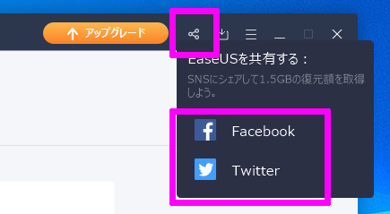
ただこれだけです。
SNS を選択するだけで、実際に シェアしなくても 1.5GB が貰えます。
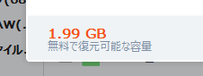